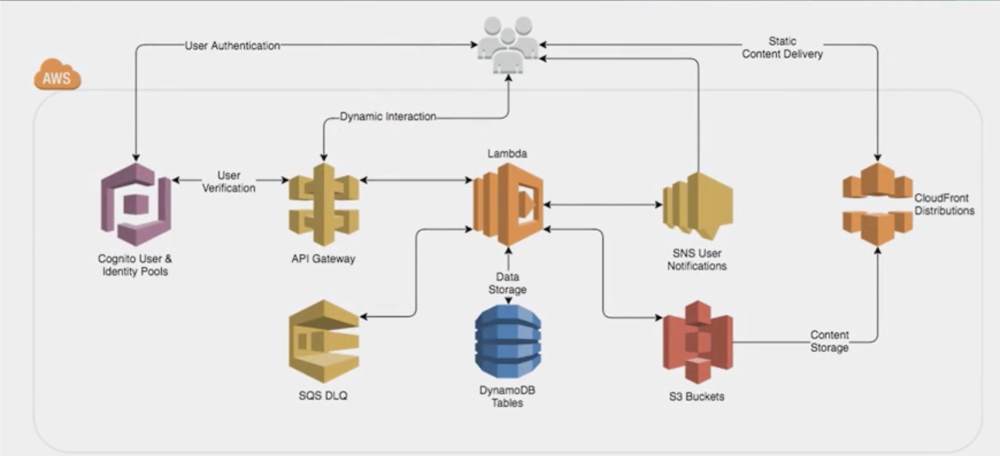

Deployment
Source: AWS CodeCommit
AWS CodeCommit is a fully-managed source control service that hosts secure Git-based repositories.
Build: AWS CodeBuild
AWS CodeBuild is a fully managed continuous integration service that compiles source code, runs tests, and produces software packages that are ready to deploy.
Production: AWS CodeDeploy
CodeDeploy is a deployment service that automates application deployments to Amazon EC2 instances, on-premises instances, serverless Lambda functions, or Amazon ECS services.
CD: AWS CodePipeline
AWS CodePipeline is a fully managed continuous delivery service that helps you automate your release pipelines for fast and reliable application and infrastructure updates.
Monitor: AWS X-Ray
AWS X-Ray helps you debug and analyze your microservices applications with request tracing so you can find the root cause of issues and performance.
Highly Available and Scalable Applications
- Multi-AZ and multiple regions
- Health Check and Failover mechanism
- Stateless application: Store session state in cache server or DynamoDB
- Understand which AWS services can help achieve your goals. For example, Auto Scaling can help you maintain high availability and scalability.
AWS Deployment and Maintenance Services
AWS Elastic Beanstalk
No more worrying about underlying technologies/infrastructure.
Components
- Environment
- Application Versions
- Configuration
Permission Model
- Service Role
- Instance Role

Services used by Elastic Beanstalk to create a web server environment:
- S3 bucket
- Load Balancer
- Auto Scaling Group
- EC2
AWS OpsWorks
Chef recipes: managing multiple layers. Out-of-the-box recipes to support layers that AWS itself does not support.
AWS CloudFormation
Infrastructure as code.
Template
- Define resources to create
- Code your infrastructure in JSON/YAML
Stack
- Create from templates
- Create multiple stacks (in multiple regions) from the same template: StackSet
- Monitor progress of stack updates:
- in progress
- complete
- failed (entire stack will roll back)

Structure of Templates
Structure
Only the resources section is required.
Some sections in the template may be in any order.
AWSTemplateFormatVersiona date to indicate versionDescriptiontemplate description, text string explaining the purposeMetadatatemplate metadataParametersset of parameters, such as inputs that go into the templateMappingsset of mapping, static variables/key-value pairsConditionset of conditions, if and when certain resources are createdResourcethe aws resourcesOutputsset of outputs. Values of custom resources created by the template, such as the URLs for a website the stack creates.
CloudFormation Elements
- Intrinsic functions
- Pseudo parameters
- Custom resources
- Conditional expressions
Built-in Functions (Intrinsic functions) that help you manage your stack
You can use intrinsic functions only in specific parts of a template. Currently, you can use intrinsic functions in:
resource properties,
outputs,
metadata attributes, and
update policy attributes.
You can also use intrinsic functions to conditionally create stack resources.
Fn::Base64
returns the Base64 representation of the input string. This function is typically used to pass encoded data to Amazon EC2 instances by way of the UserData property.
Fn::Cidr
The intrinsic function Fn::Cidr returns an array of CIDR address blocks. The number of CIDR blocks returned is dependent on the count parameter.
1 | { "Fn::Cidr" : [ipBlock, count, cidrBits]} |
Condition functions
You can use intrinsic functions, such as Fn::If, Fn::Equals, and Fn::Not, to conditionally create stack resources.
Fn::FindInMap
The intrinsic function Fn::FindInMap returns the value corresponding to keys in a two-level map that is declared in the Mappings section.
Fn::GetAtt
The Fn::GetAtt intrinsic function returns the value of an attribute from a resource in the template.
Fn::GetAZs
The intrinsic function Fn::GetAZs returns an array that lists Availability Zones for a specified region in alaphabetical order.
Fn::ImportValue
The intrinsic function Fn::ImportValue returns the value of an output exported by another stack.
Fn::Join
The intrinsic function Fn::Join appends a set of values into a single value, separated by the specified delimiter.
Fn::Select
The intrinsic function Fn::Select returns a single object from a list of objects by index.
Fn::Split
To split a string into a list of string values so that you can select an element from the resulting string list, use the Fn::Split intrinsic function.
Fn::Sub
The intrinsic function Fn::Sub substitutes variables in an input string with values that you specify.
Fn::Transform
The intrinsic function Fn::Transform specifies a macro to perform custom processing on part of a stack template.
Ref
The intrinsic function Ref returns the value of the specified parameter or resource.
- When you specify a parameter’s logical name, it returns the value of the parameter.
- When you specify a resource’s logical name, it returns a value that you can typically use to refer to that resource, such as a physical ID.
Serverless Platform

Compute: Lambda
Event Sources (example) to trigger Lambda
- Data Stores
- S3
- DynamoDB
- Kinesis
- Amazon Cognito
- Endpoints
- Amazon API Gateway
- AWS IoT
- AWS Step Functions
- Amazon Alexa (virtual assistant AI technology)
- Development and Management Tools
- AWS CloudFormation
- AWS CloudTrail
- AWS CodeCommit
- Amazon CloudWatch
- Event/Message Services
- Amazon SES
- Amazon SNS
- Cron Events (used to schedule commands at a specific time)
- Amazon SQS
How can you deploy a Lambda Serverless application
- AWS Serverless Application Model (AWS SAM)
- You can use AWS SAM to define your serverless applications.
- AWS CloudFormation deploy command
deploy --template-file <value> --stack-name <value>Deploys the specified AWS CloudFormation template by creating and then executing a change set.
- AWS CodeDeploy
- CodeDeploy is a deployment service that automates application deployments to Amazon EC2 instances, on-premises instances, serverless Lambda functions, or Amazon ECS services.